One page, four stops
- One — the hero spends everything on a single promise.
- Two — then it explains itself, once.
- Three — then it says what it stands for.
- Four — then it shows you who is behind it.
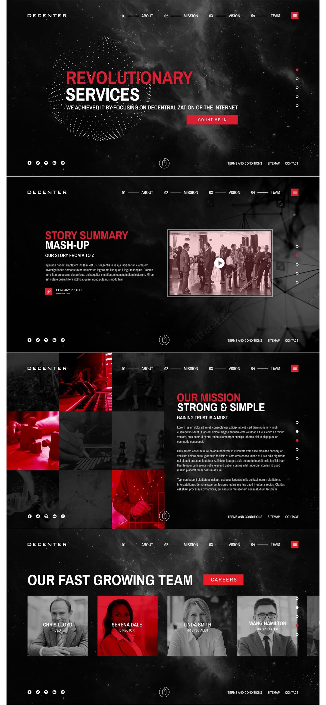
CSS Animations · Scroll


Real scroll position drives every effect below — no fixed timers, no faked progress.
The bar above and the ring below-left are both live.
Reference
Four decisions are doing the work. The frame stays pinned while they scroll past it.
reveal-direction-aware has to know which way the page is travelling, and no CSS timeline exposes that.reveal-repeat was dropped — byte-identical to reveal-once once the binder stopped re-observing after first entry. It is gone from the catalog, not pending.Reveal, fade & skew — 3
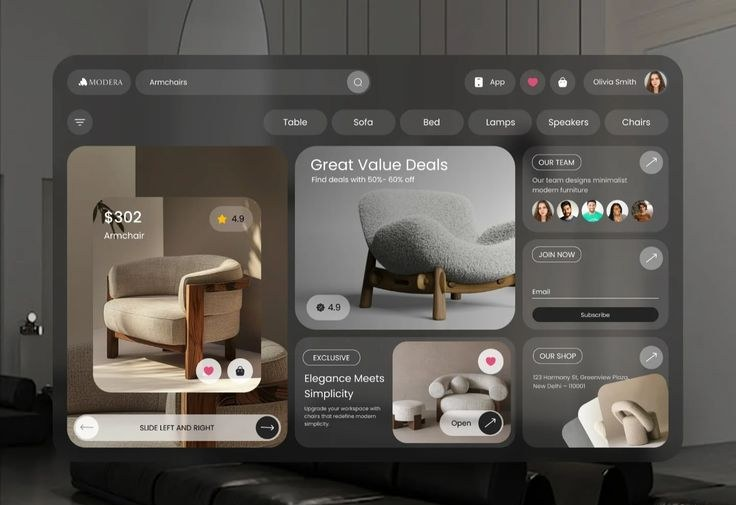
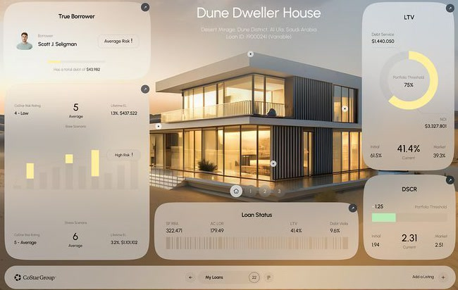
Same effects, different elements — 2
A still on the left, a video on the right, and nothing about either
primitive knows or cares which is which. The left card composes an entrance with a blur, the right
one uses a scroll primitive instead — both scrub with scroll position and run backwards on the
way up. The video is muted, loop, playsinline and
preload="none", and only starts once it is actually on screen.
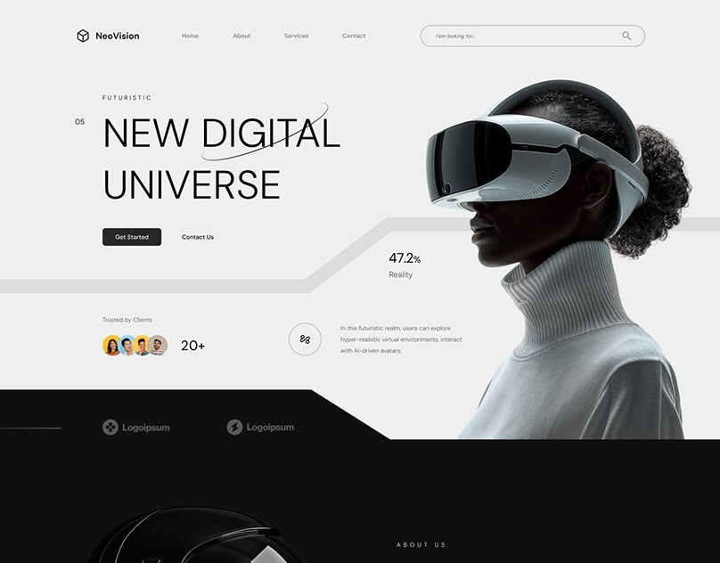
Parallax — 5

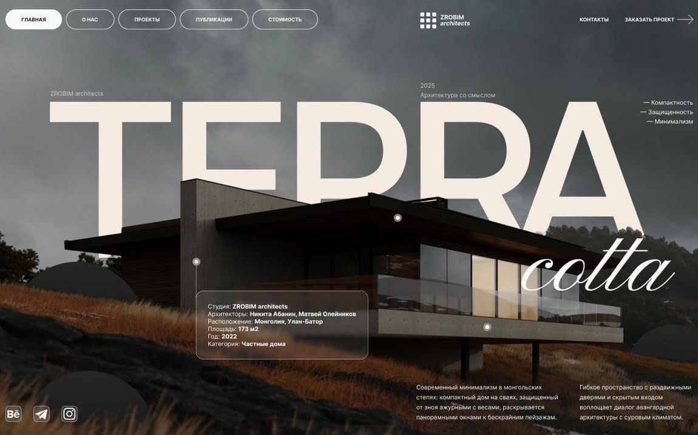


parallax-rotate, pinned — half a turn unwound across a 200vh hold.
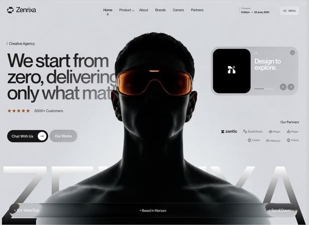
Entrances on a view timeline — 4

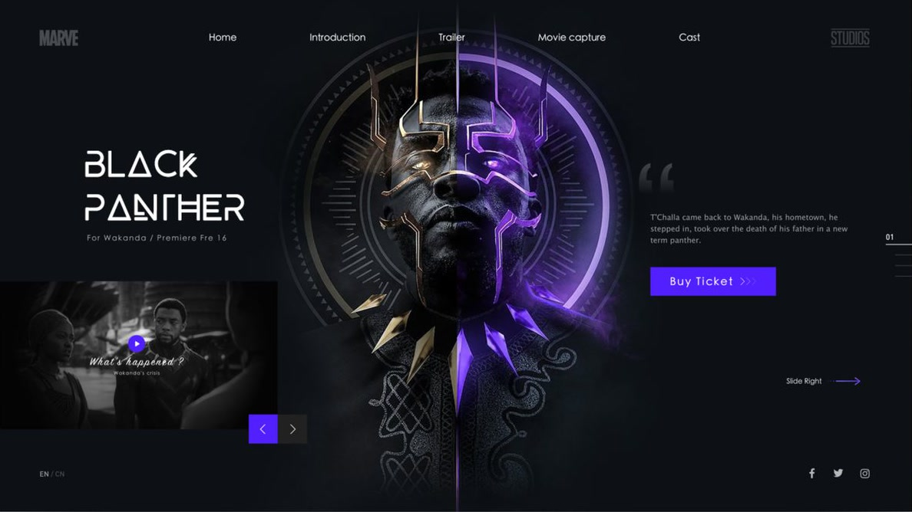
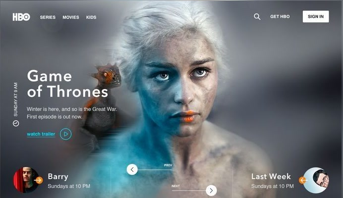
Catalog section C — 11 named effects, all real primitives through the shared JS orchestrator.
Pinning — 4
pin-section holds an element still while the page keeps moving under it.data-kui="pin-section distance:200vh"
pin-section, pin-until, pin-spacer, stacking-cardsscroll-spy highlights the active section in the navscroll-snap-x/-y, no JS involvedpin-until is the sticky-sidebar pattern — no spacer inserted.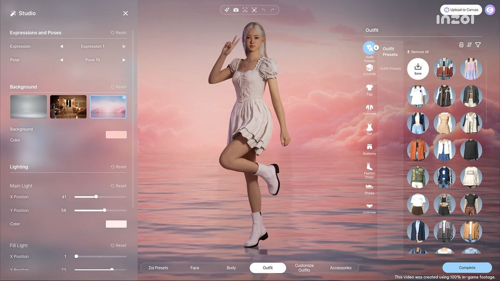
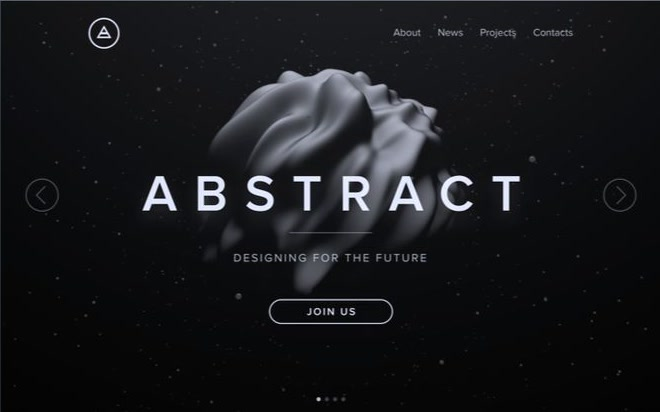
pin-spacer is the same primitive as pin-section, named for what it does.<div data-kui-spacer> — an actual node in the DOM, not a drawing of one.data-kui="pin-spacer distance:120vh"
stacking-cards is the pin primitive applied once per card.offset, so the deck builds itself as you scroll.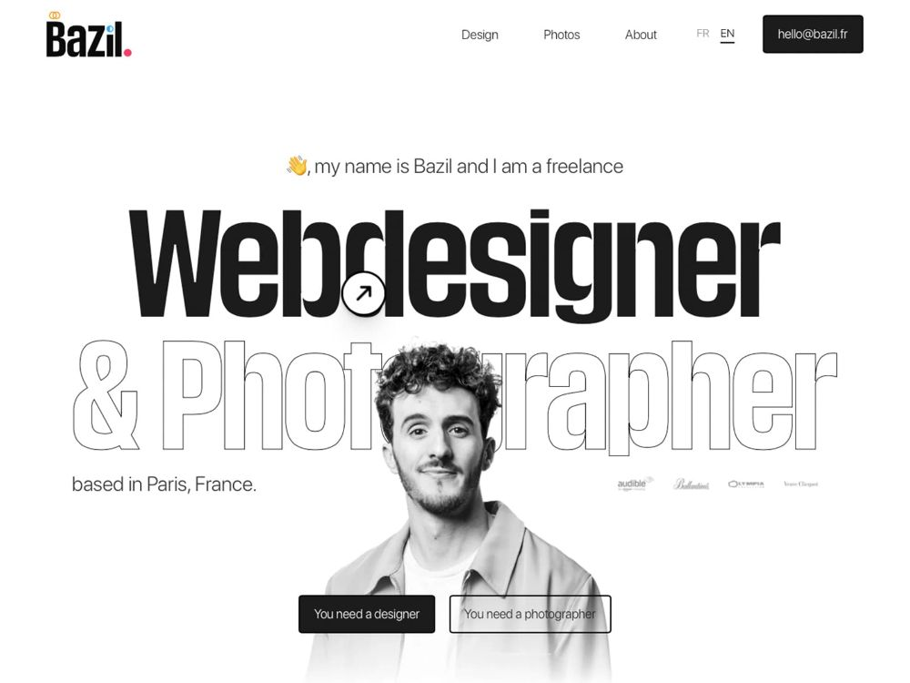
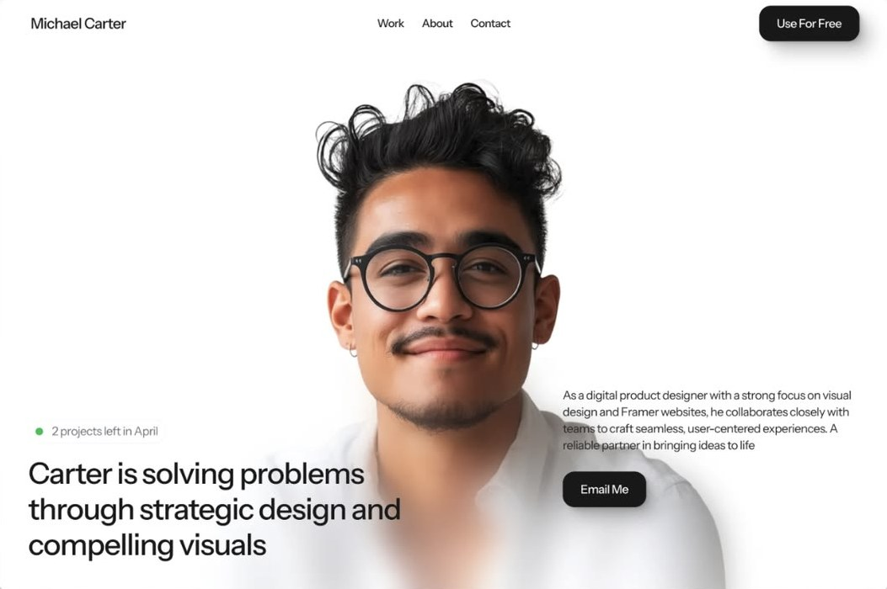
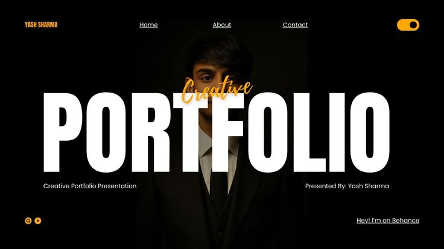
Scrollytelling — 1
scrollytelling-step writes data-kui-step onto the section as you pass through it.data-kui="scrollytelling-step distance:200vh steps:4 target:'.story-lines > li, .story-dots > span'"
One page, four stops

Horizontal travel — 1
data-kui="horizontal-scroll distance:300vh"


Media scrub — 1 of 2
frames:5 plus an {i} placeholder in src: swaps in one still per fifth of the scroll range.scroll-desaturate, reading the same --kui-progress the scrub publishes.data-kui="sequence-scrub target:'.scrub-viewport img' distance:220vh, scroll-desaturate timeline:pin"

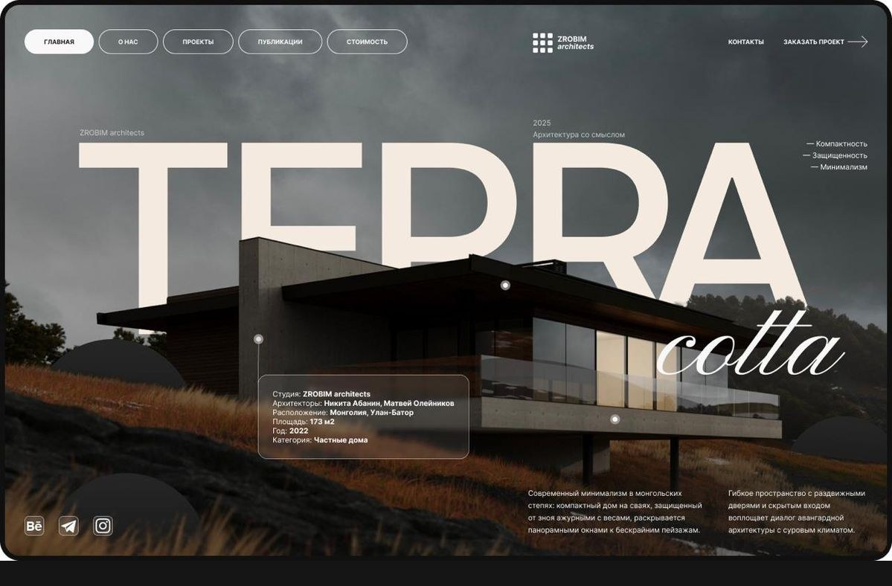
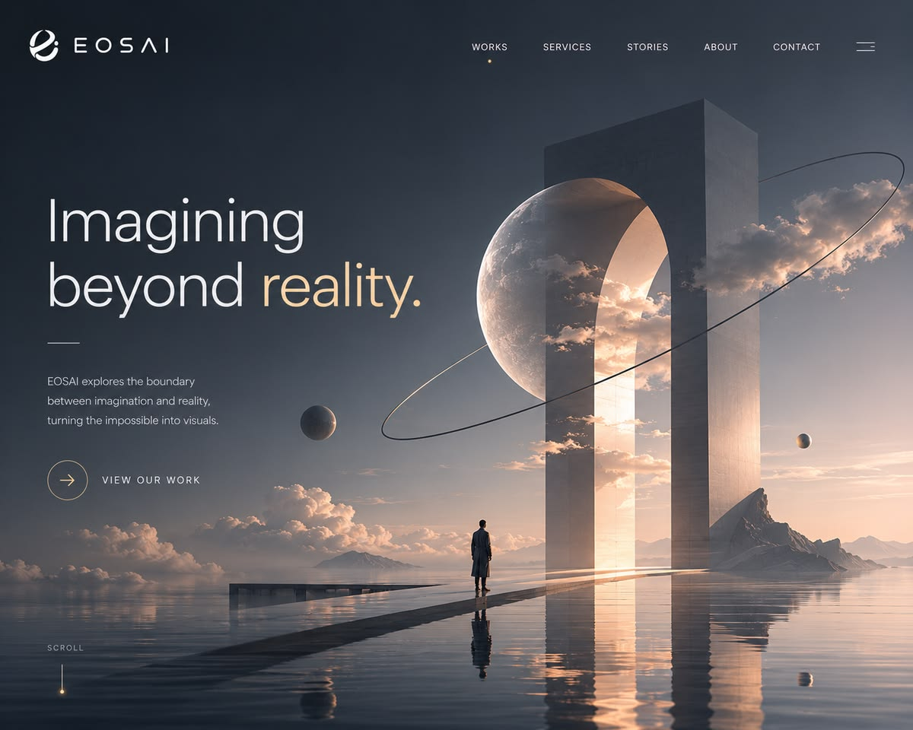
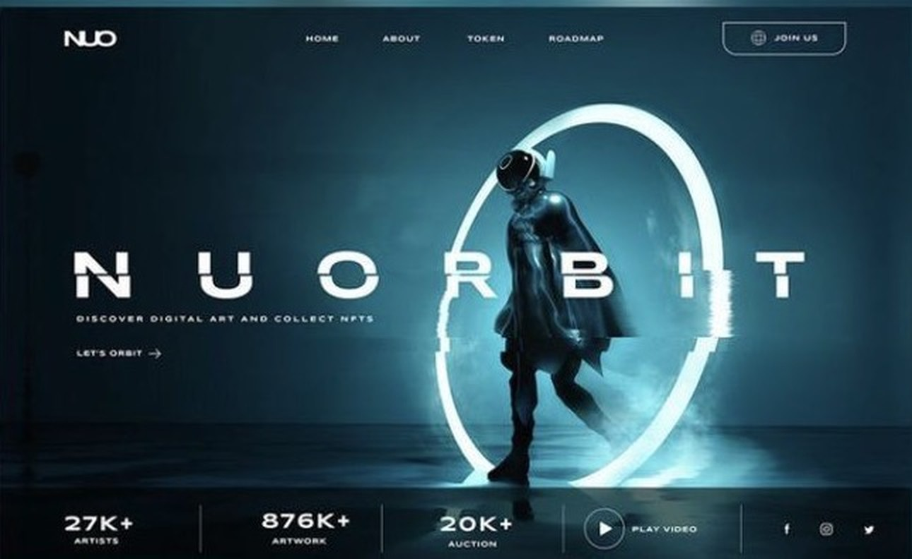

Navigation — 1
scroll-spy marks the section you are currently looking at.target you point it at — here, the matching nav link.Category
Category
Category
Category
Native CSS passthroughs — 2
scroll-snap-type and -align.data-kui="scroll-snap-x"
data-kui="scroll-snap-y"
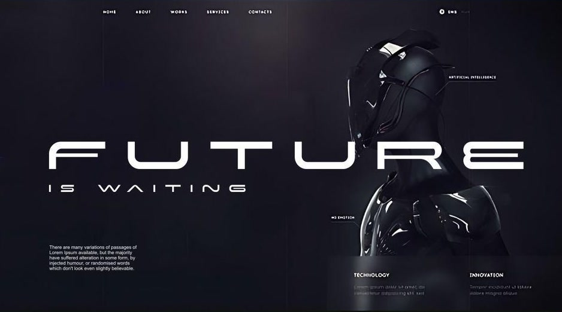